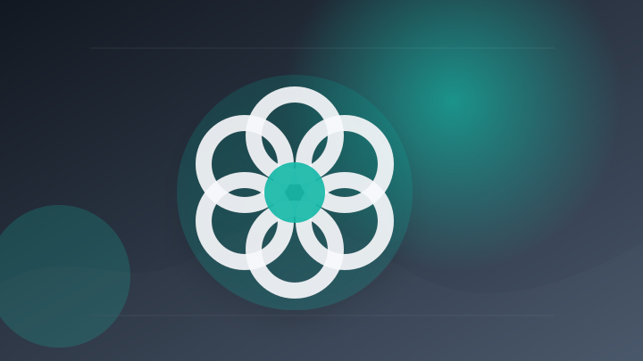
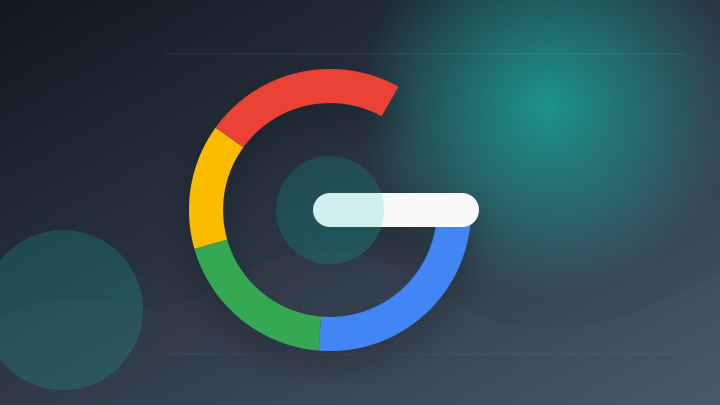
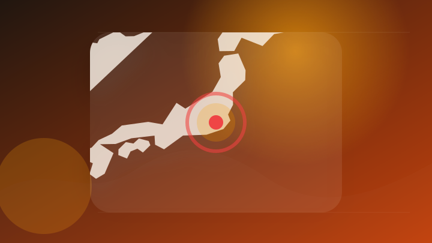
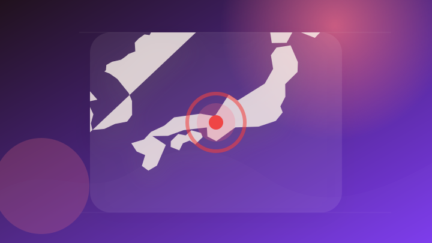
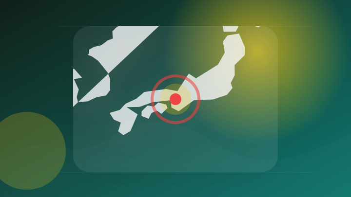
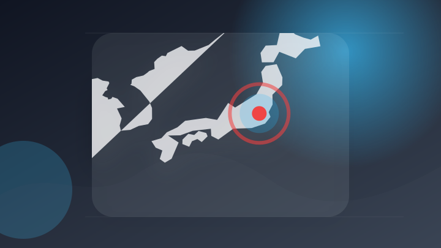
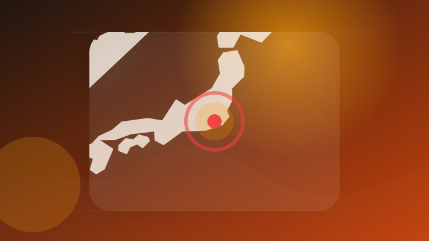
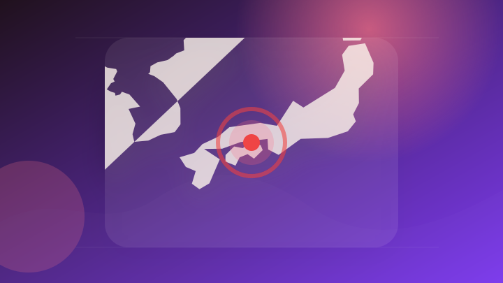

AI
6 topics
AI 大手報道 報道確認 仕事で使える
法人向け生成AIツール『ゼロプロ』、新価格・大型アップデートを実施 「ITトレンドEXPO 2026 Summer」で最新版を紹介 ～誰でも・簡単・安全に使える生成AIで、企業のAI活用をさらに加速～
法人向け生成AIツール『ゼロプロ』、新価格・大型アップデートを実施 「ITトレンドEXPO 2026 Summer…
注目ポイント注目度 64点
AI 大手報道 報道確認 仕事で使える
プレスリリース：［サテライトオフィス×トライフォース業務提携］AI導入における「最大の壁」解消へ！サテライトオフィス初の助成金活用が可能な生成AIリスキリング研修を提供（PR TIMES）
プレスリリース：［サテライトオフィス×トライフォース業務提携］AI導入における「最大の壁」解消へ！サテライトオフィ…
注目ポイント注目度 64点
AI 配信記事 速報・続報待ち 仕事で使える
動画生成AI「FLUX 3 Video」が一般公開される、1080p・20秒の動画を生成可能で近日中にオープンモデルも公開予定
動画生成AI「FLUX 3 Video」が一般公開される、1080p・20秒の動画を生成可能で近日中にオープンモデ…
注目ポイント注目度 61点

AI 配信記事 速報・続報待ち 仕事で使える
高学歴YouTuber、「ChatGPT-5.5 Pro」で東大入試に挑戦 驚きの得点結果に視聴者「おもろすぎる」
注目ポイント注目度 61点
AI 配信記事 速報・続報待ち 仕事で使える
大塚商会とJAPAN AI社、生成AI活用を通じた中小企業支援の新たな提携
注目ポイント注目度 61点
AI 配信記事 速報・続報待ち 仕事で使える
Red Hat、AIガバナンス自動化のOSS「Asago」公開…Nvidia、Microsoftも参加
注目ポイント注目度 61点
IT業界
4 topics

IT業界 配信記事 速報・続報待ち 動向確認
Googleの同期されたパスキーは、「Pass-ta-key」攻撃によって盗まれる可能性がある。
Googleの同期されたパスキーは、「Pass-ta
注目ポイント注目度 61点
IT業界 配信記事 速報・続報待ち 動向確認
図解を別ツールで作らなくていい？Google DocsでGeminiが図やインフォグラフィックを自動生成
注目ポイント注目度 61点
IT業界 配信記事 速報・続報待ち 仕事で使える
巨大IT企業が抱える「見えない借金」は250兆円。元Microsoftエンジニア中島聡が解説する「AIブーム」の危うい裏側
巨大IT企業が抱える「見えない借金」は250兆円。元Microsoftエンジニア中島聡が解説する「AIブーム」の危…
注目ポイント注目度 61点
IT業界 配信記事 速報・続報待ち 市場・企業
【ニュース】イーディーエル株式会社は Google for Education(TM) より感謝状「Appreciation for Excellent Partnership 2026」を受贈
【ニュース】イーディーエル株式会社は Google for Education(TM) より感謝状「Appreci…
注目ポイント注目度 61点
政治
2 topics
社会
4 topics

社会 大手報道 報道確認 動向確認
元ジャンポケ斉藤被告に懲役７年求刑 判決は１１月、ロケバス性的暴行―東京地裁
注目ポイント注目度 64点
社会 配信記事 速報・続報待ち 動向確認
税金裁判の動向【今月のポイント】第282回 質問応答記録書の記載内容に基づく「隠蔽・仮装」該当事実の認定
注目ポイント注目度 61点
社会 配信記事 速報・続報待ち 動向確認
民事裁判で生成ＡＩ活用、「作業の効率化」期待・「事実見落とし」「裁判官を誤導」にリスク…有識者研究会が報告書
注目ポイント注目度 61点

社会 配信記事 速報・続報待ち 動向確認
大津市の中高校生「体験できたのは貴重な機会」 模擬裁判で法曹の仕事学ぶ
注目ポイント注目度 61点
事件・事故
6 topics

事件・事故 大手報道 報道確認 動向確認
訪問介護利用者の口座から1千万円詐取した疑い、ヘルパーの男を逮捕 [大阪府]
注目ポイント注目度 70点

事件・事故 配信記事 速報・続報待ち 動向確認
女性から110番、駆け付けたら窃盗容疑で捜査中の人物…脅迫容疑で男逮捕
注目ポイント注目度 67点
事件・事故 配信記事 速報・続報待ち 動向確認
高級車が車7台に衝突 6人にけがさせた疑いで運転の男逮捕 捜査関係者 最新の社会ニュース【随時更新】
注目ポイント注目度 67点

事件・事故 配信記事 速報・続報待ち 要注意
災害復興職員かたる詐欺事件 神奈川の男が指示役か（ふくしまNEWS -KFBデジタル-）
災害復興職員かたる詐欺事件 神奈川の男が指示役か（ふくしまNEWS -KFBデジタル
注目ポイント注目度 67点

事件・事故 配信記事 速報・続報待ち 動向確認
ガソリン代金を払わずに給油 詐欺と詐欺未遂の疑いで72歳の男を逮捕 香川県警
注目ポイント注目度 67点
事件・事故 配信記事 速報・続報待ち 要注意
【大垣警察署】交通死亡事故発生について
注目ポイント注目度 67点